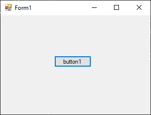
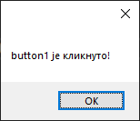
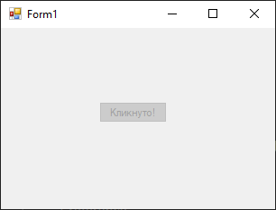

Кастовање контрола¶
Често ће бити потребно да сазнаш која је компонента у Windows Forms App пројекту иницирала неки догађај, како би могао да радиш са својствима или методама те компоненте.
На пример, нека је потребно да радиш са својствима и методама неког дугмета
на основу догађаја Click. Задатак је да својство Text промениш у
Кликнуто! и онемогућиш дугме, ако је корисник кликнуо на то дугме.
Креирај нови Windows Forms App (.NET Framework) пројекат и додај једно дугме
на форму.

Кликни на дугме, па у Properties прозору креирај догађај Click. Како
изгледају параметри догађаја Click за једно дугме?
private void button1_Click(object sender, EventArgs e)
{
}
Параметар object sender представља извор или иницијатор догађаја. То је
објекат који је покренуо догађај. Значи, ако се кликом на дугме button1
покрене догађај, онда ће sender бити инстанца дугмета button1.
EventArgs e параметар садржи податке који се односе на догађај. EventArgs
је основна класа која се користи за све догађаје, али често се користе и класе
наслеђене из класе EventArgs које садрже додатне информације специфичне за
одређени догађај. На пример, за догађај који се покреће при промени текста у
контроли TextBox можеш користити класу TextChangedEventArgs која наслеђује
EventArgs и садржи додатне информације о томе како се текст променио.
Како онда можеш да сазнаш да ли је неко дугме кликнуто и решиш задатак?
У следећем коду, када корисник кликне на дугме…
private void button1_Click(object sender, EventArgs e)
{
Button kliknutoDugme = sender as Button;
MessageBox.Show(kliknutoDugme.Text + " је кликнуто!");
}
…sender је објекат који је покренуо догађај (у овом случају дугме), a e
је објекат типа EventArgs који садржи информације о догађају, а у следећој
линији кода…
Button kliknutoDugme = sender as Button;
…извршена је операција кастовања објекта sender у тип Button помоћу
оператора as. Због тога ће у MessageBox.Show() методи, новокреирани објекат
kliknutoDugme типа Button имати исто својство Text као и оригинално дугме
button1:

Са кастовањем си се сусрео још у првом разреду, где си променљиве једног типа експлицитно кастовао у други тип. У програмском језику C# кастовање објекта из једног у други тип можеш да реализујеш на два начина:
користећи оператор
as, као у примеру изнад, где операторasпокушава да изврши кастовање и враћаnullако кастовање није успешно, илиексплицитно, као у програмском језику C, где се наводи жељени тип у заградама испред објекта који се кастује, на пример:
Button kliknutoDugme = (Button)sender;
Зашто је боље користити оператор as од експлицитног кастовања? Ако користиш
оператор as, а sender није типа Button, kliknutoDugme ће бити null и
неће бити бачен изузетак. Ако извршиш експлицитно кастовање, а sender није
типа Button, биће бачен изузетак!
Ово можеш искористити да решиш дати задатак на следећи начин:
private void button1_Click(object sender, EventArgs e)
{
Button kliknutoDugme = sender as Button;
if (kliknutoDugme != null)
{
kliknutoDugme.Text = "Кликнуто!";
kliknutoDugme.Enabled = false;
}
}
Прво је извршено кастовање sender у тип Button помоћу оператора as. Ако
је кастовање успело, kliknutoDugme неће бити null, па можеш да користиш
својства и методе дугмета онако како је тражено у задатку - својство Text
промениш у Кликнуто! и онемогућиш дугме тако што ћеш својству Enabled
доделити вредност false. С друге стране, ако кастовање из неког разлога није
успело, kliknutoDugme ће бити null и неће се десити ништа - неће бити бачен
изузетак нити ће се извршити наредбе у оквиру условне наредбе if, јер израз
kliknutoDugme != null није тачан.
